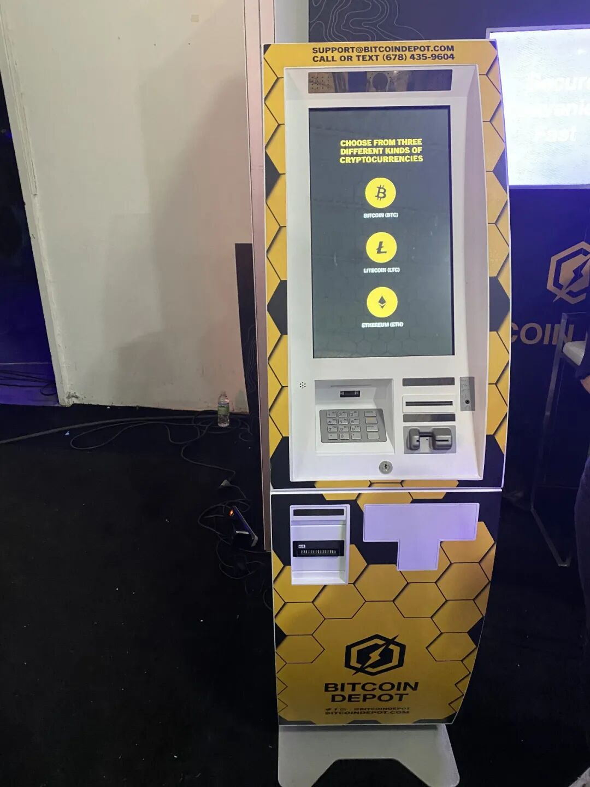
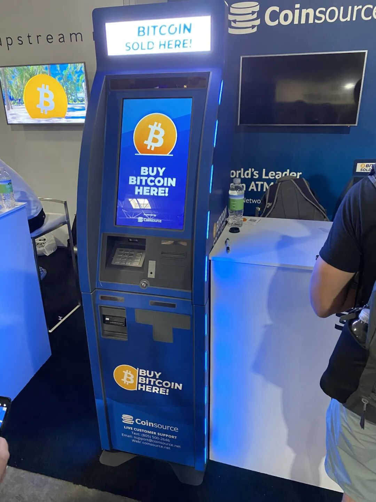
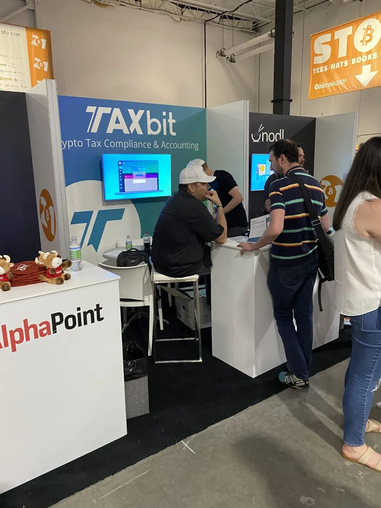
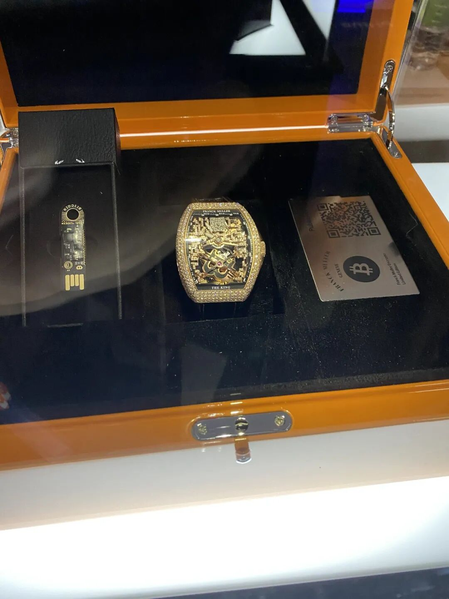
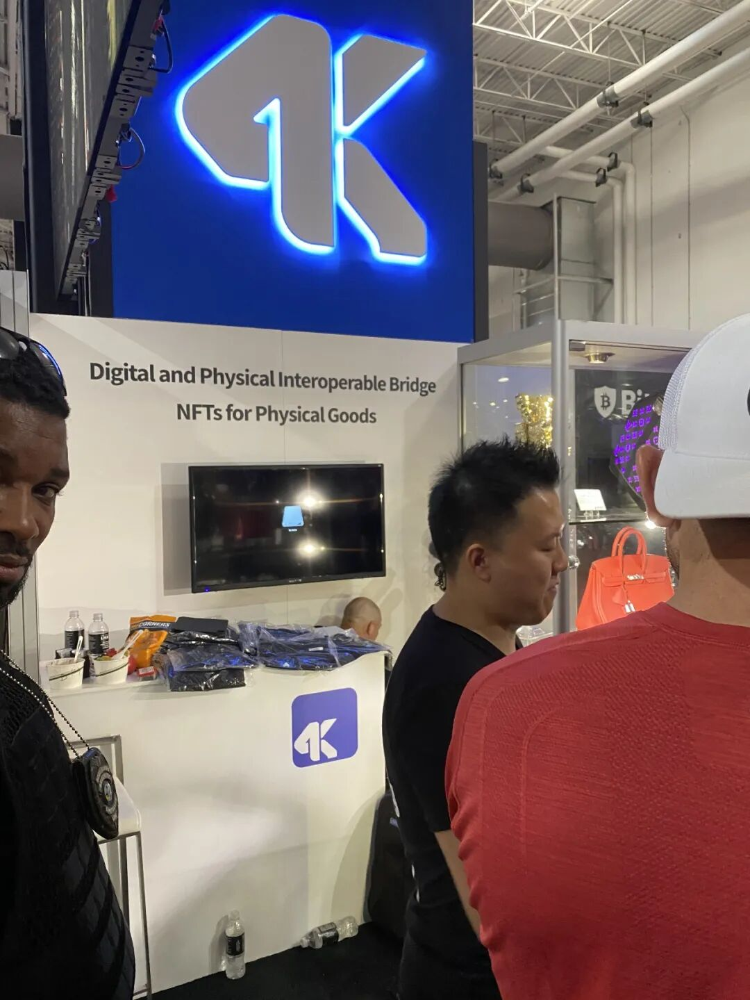

这个随记停更了一个月了，不知道大家还好吗？
这个月的行情整个往下走了很多。btc一路从接近6万的地方跌到了3万出头，整整跌掉了50%，整个大牛市的形态都跌没了。
对于我个人来说，虽然币价导致的下跌确实让我损失了不少，但是defi挖矿还是可以补回不少的损失。
而且从币本位的角度考虑，由于币价下跌，因此用稳定币挖矿的收益累积币的速度反而加快了，也是一件好事。
对于后市来说，我个人觉得这次的走势有点类似于2013年的双顶行情，因此这个牛市要想重新回来，可能还需要等待3-6个月，而在此期间，我们可以慢慢等待，逢低买入一些之前看好，但是一直没有机会买入的项目。
对于Defi来说，这段时间有点类似于去年的12月。当时defi的大部分代币都不停下跌，不停创新低。
当时我大部分的代币投入都腰斩了。不过回过头来看，当时所有的投入都至少翻倍了，同时也不乏10倍以上收益的项目。
而在不停下跌的市场中还可以稳稳拿住筹码，靠的是对于项目底层逻辑的深刻理解，对于整个生态的数据细致的把握。
Bitcoin 2021 in Miami
上周我去参加了位于迈阿密的bitcoin 2021大会，收获颇丰。这一节我想随便聊聊我参会的感想。
整体上bitcoin 2021是属于比特币至上主义的会议，因此会上基本上没有ETH，Defi相关的讨论或者话题。
主会场的视频可以在youtube上看到全部的回放，从这一点上来说，其实去参会似乎没啥必要。
不过肉身参会可以认识很多币圈的人，这一点上来说在网上看视频是无论如何比不了的。我也在参会的过程中结识了不少币圈的朋友，开了眼界。
另一方面，bitcoin 2021的展会有上百家的企业过来参展，展示他们跟比特币相关的业务。对此我也是大开眼界。
附录是一些我看到比较有意思的业务，大家可以自行了解。
结尾
今天刚飞回来，时差似乎还没完全倒过来，文章写到现在已经有点累了，准备去睡了。
这周的文章主要是给大家充值信仰的，因为很多圈里的人因为持续地下跌，盘整，都对于行情失去信心了。
但是我们要看到，比特币比起去年的6000多U，以太坊比起去年的100U，都已经分别翻了5倍和20多倍了，稍微盘整一下也是正常的。
从基本面的角度来看，比特币的活跃地址增长数量，以太坊生态的tvl，完全对得起它币价的上涨，因此虽然这两个资产分别已经涨了这么多了，我个人觉得他们相对来说还是处于低位，还完全具有向上的可能性。
当然是不是要再等4年的下一个周期，还是3-6个月还会有一波更大的牛市行情，这一切都很难说，我们也只能牢牢抓住基本面，等待这个时代带给我们应有的馈赠。
还有再过一周Arbitrum的生态就要全面开放了，大家可以去关注一下。
===============
附录
做比特币ATM的 Bitcoin Depot和coinsource


做crypto 的tax的Taxbit

比特币主题的表

Market Rebellion，做类似glassnode 服务的，但是有关于各种指标的教学
https://marketrebellion.com/subscriptions/crypto-trading-room/?utm_source=tradeshow&utm_medium=handout&utm_campaign=bitcoin2021#codeword
Trading Central，美股数据分析，现在也开始做crypto
https://www.tradingcentral.com/
用bitcoin作为奖金的esport比赛
https://mintgox.com/
Prime trust
帮交易所等做法币合规通道的，比如各国的银行账户的合规等等，binance.us, ok都是他们客户
unchained.com
做bitcoin IRA的，跟keykeeper IRA合作
Crusoe
https://www.crusoeenergy.com/s/Crusoe-DFM-Emissions-Reduction.pdf
利用天然气的废能源来挖矿，给天然气公司固定的收益，不给bitcoin exposure
IRS compliant attorney designed trust
Platinum Trust Group
https://platinumtrustgroup.com/
Bitcoin ATM
Bitcoin Depot
数字游民
citizensofbitcoin.com
Futurebit Appollo BTC
在家挖矿的btc矿机
BTC.us
卖btc后缀的域名
bitcoinseduction.com
一个btc的电影
enigmax
一个给机构用的交易服务商
byod.exchange
一个让你出卖data换btc
Bobby C.lee卖书的
The promise of bitcoin签名书
Alphapoint
提供交易所搭建技术的
4k
